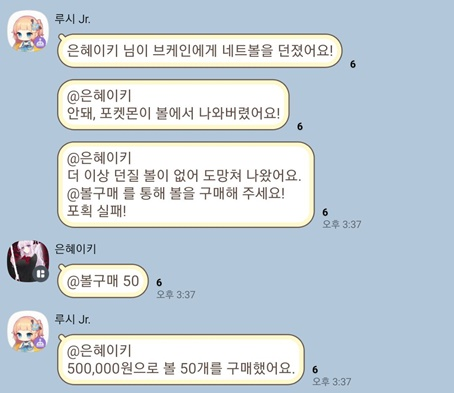
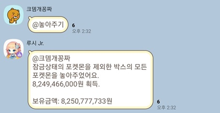
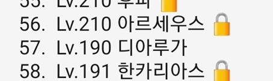
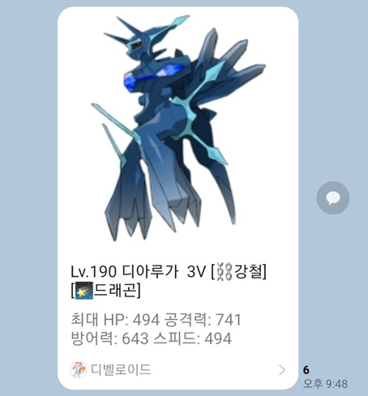
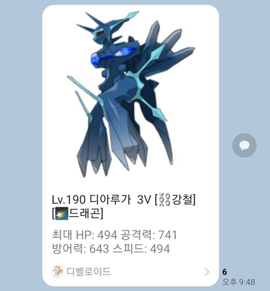

포켓몬 게임
카톡봇을 통해 구현한 포켓몬 게임입니다.
게임 운영중인 채팅방 링크
● 도배가 워낙 심한 기능이라 따로 채팅방을 파서 이 곳에서만 구동되게 해놨습니다.
카카오링크(사진 출력) 기능의 서비스 종료로 인해 수정이 필요하여 해당 게임의 운영은 잠정중단합니다. 양해 부탁드립니다.
@하늘색: 해당 기능을 불러오는 명령어의 접두어
[분홍색]: 필수로 입력해야 하는 인자
(연두색): 생략 가능한 옵션 인자
▶ 가입과 탈퇴
가입: @포켓몬 가입
탈퇴: @포켓몬 탈퇴
자신의 채팅방 닉네임을 통해 가입합니다.
※닉네임에 슬래시(/)가 들어가면 가입할 수 없습니다.
▶ 탐험과 포켓몬 출현
탐험 시작: @야생 또는 ㅇㅅ
볼 던지기: @볼 또는 ㅂ
휴식: @휴식
탐험 시작 시, 잠시의 캐스팅 시간 후 확률에 따라 포켓몬이 나타납니다.
포켓몬이 나타나면 볼을 던져 포획할 수 있습니다.
탐험 중 확률에 따라 포켓몬 대신 아이템을 발견하기도 하며, 이 경우 포켓몬 출현 시까지 탐험이 계속 진행됩니다.
아이템 중에는 낮은 확률로 포켓몬의 알이 출현하며, 일반 알은 레어 등급 이상, 전설 알은 전설 이상 포켓몬 확정권입니다.
아이템 중에는 매우 낮은 확률로 대량의 돈을 획득하는 특별한 아이템이 등장하기도 합니다.
탐험은 1회 당 체력 1을 소모하며, 자신의 스텟에 따라 체력을 모두 소진하면 탐험이 불가능해집니다.
휴식을 통해 체력 회복이 가능하며, 휴식 명령어를 사용 시 휴식 시작, 다시 사용 시 휴식을 종료하게 됩니다.
▶ 포켓몬 출현과 포획
탐험 시작: @야생 또는 ㅇㅅ
볼 던지기: @볼 또는 ㅂ
도망치기: @도망 또는 ㄷㅁ
볼 구매: @볼구매 (50개 이하 갯수)
포켓몬은 탐험을 통해 발견 및 포획이 가능합니다.
전설의 포켓몬이나 울트라비스트는 스텟에 따라 낮은 확률로 출현합니다.
전설 및 울트라비스트 포켓몬은 일반적인 포켓몬보다 포획하기 어렵습니다.
매우 희박한 확률로 숨겨진 포켓몬이 출현하기도 하며, 숨겨진 포켓몬은 자신의 스텟과 관계없이 고정 출현률 및 포획률을 가집니다.
포획률에 따라 포켓몬이 잡히지 않기도 하며, 포획 실패 시 일정 확률로 포켓몬은 도망쳐버립니다.
볼을 모두 소진하여 던질 수 없게 되어도 포획에 실패하므로, 볼이 부족해지면 구매해서 채워야 합니다.
볼은 한 번에 최대 50개까지 소지할 수 있습니다.
▶ 플레이 정보 확인
트레이너 정보 보기: @트레이너정보 (채팅방에서의 이름)
포켓몬 보관함 보기: @내 포켓몬
보관함 비우기(돈 획득): @놓아주기
덱으로 포켓몬 이동: @덱 (보관함 번호)
덱에서 보관함으로 포켓몬 이동: @박스 (덱 번호)
덱 순서변경: @순서변경 (덱 번호1) (덱 번호2)
보관함 포켓몬 잠금: @잠금 (보관함 번호)
보관함 포켓몬 잠금해제: @잠금해제 (보관함 번호)
트레이너 정보를 통해 포켓몬 출현률, 포획률, 플레이 전적 등등 다양한 스텟을 확인할 수 있습니다.
이름을 생략할 시 자신의 정보를 표시하지만, 뒤에 다른 유저의 닉네임을 입력하면 다른 유저의 정보를 확인할 수 있습니다.

탐험 등으로 획득한 포켓몬은 보관함에서 확인이 가능합니다.
덱과 박스 이동, 육성 등의 포켓몬 조작은 보관함에 표시된 것과 같이 각 포켓몬 옆의 순서번호를 이용해 구별하게 됩니다.
놓아주기를 사용할 시 보관함에서 잠금한 포켓몬을 제외한 모든 포켓몬을 놓아주고, 금액을 획득하게 됩니다.
덱으로 이동한 포켓몬들은 잠금 여부와 관계없이 놓아주기에서 제외됩니다.
▶ 포켓몬 육성
포켓몬 보관함 보기: @내 포켓몬
포켓몬 정보 보기(덱): @덱정보 (덱 번호)
포켓몬 정보 보기(보관함): @포켓몬정보 (보관함 번호)
포켓몬 레벨업(덱): @레벨업 (보관함 번호) (한번에 레벨업할 수)
포켓몬 레벨업(보관함): @박스레벨업 (보관함 번호) (한번에 레벨업할 수)
포켓몬 스킬뽑기(덱 장착 필요): @스킬뽑기 (덱 번호)
포켓몬 스킬 잠금(덱 장착 필요): @스킬잠금 (덱 번호) (스킬 번호)
포켓몬 폼체인지(덱 장착 필요): @폼체인지 (덱 번호)
포켓몬 메가진화(덱 장착 필요): @메가진화 (덱 번호)
포켓몬 노력치 업그레이드(덱 장착 필요, 박스의 재료 포켓몬 필요): @노력치강화 (덱 번호) (박스 번호)
포켓몬 정보를 통해 모습과 타입, 스텟, 보유 기술 등을 확인할 수 있습니다.
포켓몬 레벨업은 금액 지불을 통해 강화 형식으로 하게 되며, 레벨업 수를 생략 시 1레벨을 올립니다.
모든 포켓몬의 진화는 레벨업을 통해 달성되며, 이브이처럼 진화체가 여럿일 경우 랜덤 1가지로 진화하게 됩니다.
포켓몬 기술은 금액 지불을 통해 랜덤으로 변경이 가능하며, 원하는 기술이 등장할 시 해당 기술을 잠근 상태로 변경이 가능합니다.
단, 기술을 잠근 갯수에 따라 변경 금액이 증가하게 됩니다.

일부 폼체인지 가능 포켓몬은 금액 지불을 통해 폼체인지가 가능합니다.
원작에서의 합체식 포켓몬도 폼체인지로 구현되어 있으며, 이러한 포켓몬은 특정 포켓몬 보유를 요구합니다.
일부 메가진화 가능 포켓몬은 고정 비용 20억 지불을 통해 메가진화가 가능합니다.
원작에서의 원시회귀 및 울트라네크로즈마 역시 메가진화로 구현되어 있으며, 메가진화가 X,Y 둘로 존재하는 포켓몬은 랜덤 1가지로 메가진화하게 됩니다.
※메가진화는 레벨 200이상부터 가능하며, 덱에 1마리만 장착 가능합니다.
※메가진화 및 폼체인지가 불가능한 포켓몬을 선택 시 가능한 포켓몬 목록을 출력합니다.
포켓몬의 노력치는 동일한 포켓몬을 포획한 후 재료로 사용하며 비용을 지불하여 업그레이드가 가능합니다.
업그레이드 대상 포켓몬은 덱에 장착한 상태, 재료로 사용할 포켓몬은 박스에 있는 상태로 잠금이 해제된 상태여야 합니다.

노력치는 1회당 1V씩, 최대 6V까지 업그레이드가 가능하며, 동일한 레벨의 포켓몬이라도 큰 성능 차이를 보이게 됩니다.
전설의 포켓몬이나 울트라비스트의 경우 일반 포켓몬에 비해 업그레이드 비용이 훨씬 높습니다.
 

▶ 등급업
볼 업그레이드: @볼강화
볼 업그레이드 종류: @볼종류
트레이너 등급 종류: @트레이너등급
트레이너 등급은 일정량의 포켓몬 포획 수 달성 시 자동으로 상승합니다.
트레이너 등급 상승을 통해 포획률 상승, 최대 체력 증가, 탐험 대기시간 단축 등의 혜택을 얻을 수 있습니다.
등급 종류 명령어를 통해 트레이너 등급 목록과 목록별 혜택을 확인할 수 있습니다.
볼 업그레이드는 일정량의 포켓몬 조우 수 달성 시, 업그레이드 비용을 지불하고 업그레이드가 가능합니다.
볼 업그레이드를 통해 희귀한 포켓몬의 출현률과 포획률 상승, 야생 포켓몬 기본 레벨 상승 등의 혜택을 얻을 수 있지만, 볼 구매 시의 비용 역시 증가하게 됩니다.
볼 종류 명령어를 통해 볼 업그레이드 목록과 목록별 혜택을 확인할 수 있습니다.
▶ 포켓몬 배틀
PVP 배틀 참가: @배틀참가
(2인 참가 시 매칭되어 배틀 진행)
배틀 참가 후 매칭 취소: @배틀취소
배틀에서 포켓몬이 쓰러질 시: @다음 (덱 번호) 를 통해 다음 포켓몬 내보내기
배틀 기권: @배틀기권
두 명의 유저가 배틀에 참가하게 되면, 매칭이 성사되어 포켓몬 배틀이 진행되게 됩니다.
승리한 유저는 패배한 유저의 보유 금액의 10%를 상금으로 가져오게 됩니다.
배틀에서 아군 포켓몬이 쓰러질 시, 다음 포켓몬을 내보낼 수 있습니다.
배틀은 도배 완화를 위해 전체보기로 요약되어 표시되며, 매 턴마다 양측 포켓몬이 랜덤으로 보유 기술 1개를 사용합니다.
▶ 레이드 컨텐츠(배틀)
체육관 도전: @체육관
배틀타워(일일컨텐츠): @배틀타워
체육관과 뱃지는 타입별 1개씩 총 18개이며, 체육관 도전은 체력을 5 소모합니다.
체육관 도전 시 현재 획득한 뱃지의 다음 체육관에 도전하게 됩니다.
체육관 등 레이드 컨텐츠에서의 상대 포켓몬 처치 시, 상대가 포켓몬을 즉시 내보내며 계속 배틀이 이어지게 됩니다.
체육관에서 승리 시, 일정량의 상금과 함께 뱃지를 획득합니다.
배틀타워는 일일 레이드 컨텐츠로, 리로드 1회당 1회씩만 클리어 가능합니다.
배틀타워 도전 시 자신의 선두 포켓몬 레벨에 맞춰 랜덤의 상대 트레이너가 매칭됩니다.
배틀타워에서 승리 시, 대량의 상금을 획득하게 됩니다.
▶ 챔피언리그
챔피언리그 도전: @챔피언도전
챔피언리그 도전은 모든 뱃지를 획득해야 가능하며, 체력을 5 소모합니다.
챔피언리그는 리로드 1회당 1회씩만 클리어 가능합니다.
챔피언의 포켓몬의 레벨은 최대 강화 레벨+10 고정입니다.
체육관,챔피언리그 등 레이드 컨텐츠에서의 상대 포켓몬 처치 시, 상대가 포켓몬을 즉시 내보내며 계속 배틀이 이어지게 됩니다.
챔피언리그에서 승리 시, 자신의 덱이 전당등록이 되며, 챔피언 전용 등급인 '챔피언' 으로 상승합니다.
기존 챔피언의 경우 등급 상승 이전의 원래 등급으로 돌아가게 됩니다.
리그 승리 시 전용 포켓몬을 획득 가능하며, 리그 포켓몬은 일반적인 방법으로 획득할 수 없습니다.
▶ 도감(컬렉션)
자신의 도감 현황 확인: @내 컬렉션
도감 포켓몬 목록: @컬렉션목록
도감 보상 효과 목록: @컬렉션효과
포켓몬 포획 또는 획득 시 1회에 한해 도감에 등록됩니다.
자신의 도감 수집 현황을 확인할 수 있습니다.
지역별 도감을 50%, 100% 수집할 때마다 특정 혜택을 얻을 수 있으며, 효과 목록을 통해 확인이 가능합니다.
▶ 그 외
제비뽑기(일일 컨텐츠): @제비뽑기
현재 진행중인 이벤트 확인: @포켓몬이벤트
제비뽑기는 일일 컨텐츠로, 1회 리로드 당 3회 도전 가능하며, 운이 좋다면 대량의 금액 등 좋은 보상을 획득할 수 있습니다.
도감 수집 효과로 제비뽑기 횟수 제한 추가가 가능합니다.
가끔 개발자가 이벤트를 열며, 주로 돈 획득량 증가, 전설의 포켓몬 출현률, 포획률 증가 등이 진행됩니다.